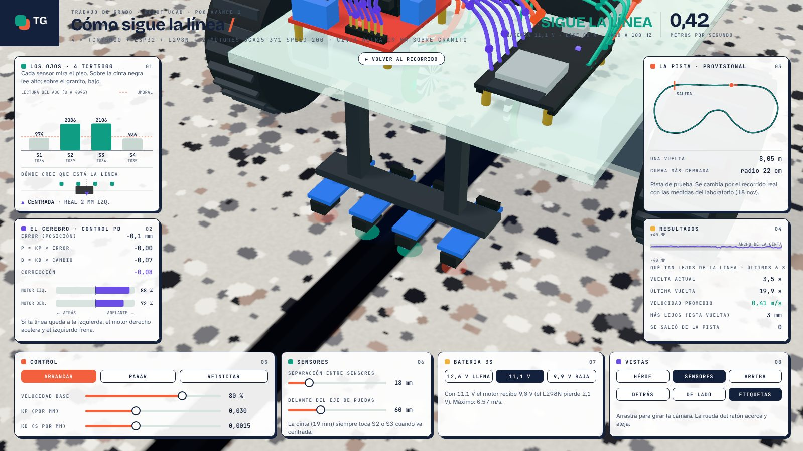

Prototipo P08 · Avance 1 · Simulador 3D
Cómo sigue la línea el robot
Cuatro sensores miran el piso. El ESP32 calcula dónde quedó la cinta y corrige: si se fue a la izquierda, acelera la rueda derecha y frena la izquierda. Así, 100 veces por segundo.
 Abrir el simulador ▶
Abrir el simulador ▶
Funciona sin internet, en una sola página. Mejor en computadora. En teléfono, gíralo de lado. Usa el mismo robot del simulador de la tracción, que no se tocó.
Cómo usarlo
Si no lo tocas, hace un recorrido solo. Al tocar cualquier cosa, lo manejas tú.
- ArrancaARRANCAR, PARAR y REINICIAR. También espacio y R.
- Ajusta el PDVelocidad base, Kp y Kd. Mira la gráfica: si zigzaguea, algo falta.
- Mueve los sensoresSeparación entre ellos y qué tan adelante de las ruedas van.
- Baja la bateríaCon 9,9 V el robot va más lento. El mismo PD debe seguir funcionando.
Lo que se aprende
Alto en la cinta, bajo en el piso
Cada TCRT5000 da un número de 0 a 4095. Los granos negros del granito también suben la lectura; por eso hay un umbral: lo que queda por debajo cuenta como piso.
Proporcional y derivativo
P corrige según qué tan lejos está la línea. D frena la corrección si la línea se acerca rápido. Sin D, el robot zigzaguea y se sale.
La separación importa
Si entre los dos sensores del centro hay más de 19 mm, la cinta cabe en el hueco y ninguno la ve. Si van muy cerca de las ruedas, ven la curva tarde.
Menos voltios, menos velocidad
De 12,6 V a 9,9 V la vuelta pasa de 17 s a 22,5 s. Con la batería baja el robot queda justo en la meta de 0,35 m/s.
Resultados en la pista de prueba
Una vuelta mide 8,05 m y la curva más cerrada tiene 22 cm de radio. Valores iniciales: base 80 %, Kp 0,030, Kd 0,0015, sensores a 18 mm entre sí y a 60 mm del eje.
| Qué se cambió | Vuelta | Velocidad | Más lejos | Resultado |
|---|---|---|---|---|
| Valores iniciales, batería 11,1 V | 19,7 s | 0,41 m/s | 17 mm | Da la vuelta |
| Batería llena, 12,6 V | 17,1 s | 0,47 m/s | 18 mm | Da la vuelta |
| Batería baja, 9,9 V | 22,5 s | 0,36 m/s | 16 mm | Da la vuelta, justo en la meta |
| Base al 100 % | 18,0 s | 0,45 m/s | 26 mm | Da la vuelta, pero se mece más |
| Sensores a 120 mm del eje | 19,3 s | 0,42 m/s | 14 mm | Da la vuelta, más centrado |
| Sensores a 30 mm entre sí | 37,0 s | 0,22 m/s | 50 mm | Pierde la línea el 23 % del tiempo |
| Sin derivativo (Kd = 0) | No completa la vuelta | Zigzaguea y se sale | ||
| Kp bajo (0,010) | No completa la vuelta | Se sale de la pista | ||
| Sensores a 30 mm del eje | No completa la vuelta | Se sale de la pista | ||
"Más lejos" es la distancia máxima entre el centro de la regleta de sensores y el centro de la cinta, en una vuelta. Salen de pruebas.mjs, que corre el mismo código de la página sin pantalla, con el granito incluido. Cada corrida varía un poco por el ruido de los sensores.
De dónde salen los números
El motor y el driver son los mismos del avance 2 de P03. Lo nuevo de los sensores son supuestos hasta tener los módulos.
| Dato | Valor |
|---|---|
| Motor (kit Emoshayoga JGA25-371 Speed 200, tabla del vendedor) | 280 rpm sin carga a 12 V, caja 1:21,3 |
| Caída del L298N (igual que P03) | 2,1 V |
| Rueda y distancia entre ruedas | Ø 65 mm · 180 mm |
| Batería 3S | 12,6 V llena · 11,1 V nominal · 9,9 V alarma |
| Peso del robot (supuesto de P03) | 80 % de la velocidad sin carga |
| Rueda en llegar a su velocidad (supuesto de P03) | 0,18 s |
| Cinta (lista de materiales) | Aislante negra de 19 mm |
| Lectura del ADC en piso y en cinta (supuesto) | 500 y 3 300 de 4 095 |
| Zona que ve cada sensor (supuesto) | radio 3 mm |
| Granito (inventado al azar) | 22 % de granos; un grano negro lee 60 % de lo que lee la cinta |
| Umbral y lazo de control (supuesto) | 20 % · 100 veces por segundo |
Evidencias
Capturas del simulador. Toca una para verla grande.



Lo que el simulador no sabe
La pista es inventada. Se cambia por el recorrido real con las medidas de la observación del 18 nov (distancias, pasillos y la foto del piso).
Los sensores no están calibrados. Cuando lleguen los TCRT5000 hay que leer cuánto marcan sobre el granito del laboratorio y sobre la cinta, a la altura real.
El motor es ideal. No sabe el PWM mínimo para que arranque, cuánto patinan las ruedas ni el peso real. P03 lo mide con el encoder en la semana 6.
El código
- model.js: el motor, la lectura de los sensores y el control PD que llevará el ESP32.
- pista.js: la pista provisional y la distancia a la línea.
- granito.js: el piso de granito con la cinta encima.
- sensores3d.js: los 4 módulos TCRT5000 en 3D.
- console.js y live.js: los paneles, los controles y el recorrido.
- robot.js y stage.js: el robot de P03 y la escena.
- pruebas.mjs: la prueba sin pantalla que dio la tabla de resultados.
Hecho con el kit teardown (licencia MIT, ver LICENSE) y three.js. Ficha técnica en el README.